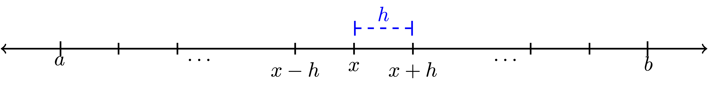
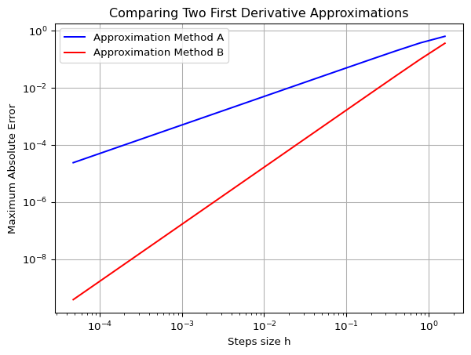

import numpy as np
# Basic operations on dual numbers represented as tuples (value, derivative)
def dual_add(a, b):
"""Add two dual numbers:
(a, a') + (b, b') = (a + b, a' + b')"""
return (a[0] + b[0], a[1] + b[1])
def dual_multiply(a, b):
"""Multiply two dual numbers:
(a, a') * (b, b') = (a*b, a'*b + a*b')"""
return (a[0] * b[0], a[1] * b[0] + a[0] * b[1])
def dual_power(a, n):
"""Raise dual number to integer power n:
(a, a')^n = (a^n, n*a^(n-1)*a')"""
return (a[0]**n, n * a[0]**(n-1) * a[1])
def dual_sin(a):
"""Sine of dual number:
sin(a, a') = (sin(a), cos(a)*a')"""
return (np.sin(a[0]), np.cos(a[0]) * a[1])5 Derivatives
The calculus was the first achievement of modern mathematics and it is difficult to overestimate its importance.
–Hungarian-American Mathematician John von Neumann
The primary goal of this chapter is to build a solid understanding of the basic techniques for numerical differentiation. This will be crucial in the later chapters of this book when we do optimisation and when we numerically integrate ordinary and partial differential equations.
We use this chapter also to comment on the importance of writing vectorized code using NumPy. And this chapter will again let us investigate truncation errors that we first discussed in Chapter 3. This is because in this chapter too, we will make use of Taylor series that we need to truncate at some order to give us practical methods.
5.1 Finite Differences
5.1.1 The First Derivative
Exercise 5.1 Recall from your first-semester Calculus class that the derivative of a function \(f(x)\) is defined as \[\begin{equation} f'(x) = \lim_{\Delta x \to 0} \frac{f(x+\Delta x) - f(x)}{\Delta x}. \end{equation}\] A Calculus student proposes that it would just be much easier if we dropped the limit and instead just always choose \(\Delta x\) to be some small number, like \(0.001\) or \(10^{-6}\). Discuss the following questions:
When might the Calculus student’s proposal actually work pretty well in place of calculating an actual derivative?
When might the Calculus student’s proposal fail in terms of approximating the derivative?
In this section we will build several approximation of first and second derivatives. The primary idea for each of these approximations is:
Partition the interval \([a,b]\) into \(N\) sub intervals
Define the distance between two points in the partition as \(\Delta x\).
Approximate the derivative at any point \(x\) in the interval \([a,b]\) by using linear combinations of \(f(x-\Delta x)\), \(f(x)\), \(f(x+\Delta x)\), and/or other points in the partition.
Partitioning the interval into discrete points turns the continuous problem of finding a derivative at every real point in \([a,b]\) into a discrete problem where we calculate the approximate derivative at finitely many points in \([a,b]\).
This distance \(\Delta x\) between neighbouring points in the partition is often referred to as the step size. It is also common to denote the step size by the letter \(h\). We will use both notations for the step size interchangeably, using mostly \(h\) in this section on differentiation and \(\Delta x\) in the next section on integration. Note that in general the points in the partition do not need to be equally spaced, but that is the simplest place to start. Figure 5.1 shows a depiction of the partition as well as making clear that \(h\) is the separation between each of the points in the partition.

Exercise 5.2 Let us take a close look at partitions before moving on to more details about numerical differentiation.
If we partition the interval \([0,1]\) into \(3\) equal sub intervals each with length \(h\) then:
\(h = \underline{\hspace{1in}}\)
\([0,1] = [0,\underline{\hspace{0.25in}}] \cup [\underline{\hspace{0.25in}},\underline{\hspace{0.25in}}] \cup [\underline{\hspace{0.25in}},1]\)
There are four total points that define the partition. They are \(0, \underline{\hspace{0.25in}}, \underline{\hspace{0.25in}}, 1\).
If we partition the interval \([3,7]\) into \(5\) equal sub intervals each with length \(h\) then:
\(h = \underline{\hspace{1in}}\)
\([3,7] = [3,\underline{\hspace{0.25in}}] \cup [\underline{\hspace{0.25in}},\underline{\hspace{0.25in}}] \cup [\underline{\hspace{0.25in}},\underline{\hspace{0.25in}}] \cup [\underline{\hspace{0.25in}},\underline{\hspace{0.25in}}] \cup [\underline{\hspace{0.25in}},7]\)
There are 6 total points that define the partition. They are \(0, \underline{\hspace{0.25in}}, \underline{\hspace{0.25in}}, \underline{\hspace{0.25in}}, \underline{\hspace{0.25in}}, 7\).
More generally, if a closed interval \([a,b]\) contains \(N\) equal sub intervals where \[\begin{equation} [a,b] = \underbrace{[a,a+h] \cup [a+h, a+2h] \cup \cdots \cup [b-2h,b-h] \cup [b-h,b]}_{\text{$N$ total sub intervals}} \end{equation}\] then the length of each sub interval, \(h\), is given by the formula \[\begin{equation} h = \frac{\underline{\hspace{0.25in}} - \underline{\hspace{0.25in}}}{\underline{\hspace{0.25in}}}. \end{equation}\]
Exercise 5.3 üéì In Python‚Äôs numpy library there is a nice tool called np.linspace() that partitions an interval in exactly the way that we want. The command takes the form np.linspace(a, b, n) where the interval is \([a,b]\) and \(n\) the number of points used to create the partition. For example, np.linspace(0,1,5) will produce the list of numbers 0, 0.25, 0.5, 0.75, 1. Notice that there are 5 total points, the first point is \(a\), the last point is \(b\), and there are \(4\) total sub intervals in the partition. Hence, if we want to partition the interval \([0,1]\) into 20 equal sub intervals then we would use the command np.linspace(0,1,21) which would result in a list of numbers starting with 0, 0.05, 0.1, 0.15, etc. What command would you use to partition the interval \([5,10]\) into \(100\) equal sub intervals?
Exercise 5.4 Consider the Python command np.linspace(0,1,50).
What interval does this command partition?
How many points are going to be returned?
How many equal length subintervals will we have in the resulting partition?
What is the length of each of the subintervals in the resulting partition?
Now let us get back to the discussion of numerical differentiation. If we recall that the definition of the first derivative of a function is \[\begin{equation} \begin{aligned} \frac{df(x)}{dx} = \lim_{h \to 0} \frac{f(x+h) - f(x)}{h}. \label{eqn:derivative_definition}\end{aligned} \end{equation}\] our first approximation for the first derivative is naturally \[\begin{equation} \begin{aligned} \frac{df(x)}{dx} \approx \frac{f(x+h) - f(x)}{h}=:\Delta f(x). \label{eqn:derivative_first_approx}\end{aligned} \end{equation}\] In this approximation of the derivative we have simply removed the limit and instead approximated the derivative as the slope. It should be clear that this approximation is only good if the step size \(h\) is small. In Figure 5.2 we see a graphical depiction of what we are doing to approximate the derivative. The slope of the tangent line (\(\Delta y / \Delta x\)) is what we are after, and a way to approximate it is to calculate the slope of the secant line formed by looking \(h\) units forward from the point \(x\).

While this is the simplest and most obvious approximation for the first derivative there is a much more elegant technique, using Taylor series, for arriving at this approximation. Furthermore, the Taylor series technique gives us information about the approximation error and later will suggest an infinite family of other techniques.
5.1.2 Truncation error
Exercise 5.5 From Taylor’s Theorem we know that for an infinitely differentiable function \(f(x)\), \[\begin{equation} f(x) = f(x_0) + \frac{f'(x_0)}{1!} (x-x_0)^1 + \frac{f''(x_0)}{2!}(x-x_0)^2 + \frac{f^{(3)}(x_0)}{3!}(x-x_0)^3 + \cdots. \end{equation}\] What do we get if we replace every “\(x\)” in the Taylor Series with “\(x+h\)” and replace every “\(x_0\)” in the Taylor Series with “\(x\)?” In other words, in Figure 5.1 we want to centre the Taylor series at \(x\) and evaluate the resulting series at the point \(x+h\). \[\begin{equation} f(x+h) = \underline{\hspace{3in}} \end{equation}\]
Exercise 5.6 Solve the result from the previous exercise for \(f'(x)\) to create an approximation for \(f'(x)\) using \(f(x+h)\), \(f(x)\), and some higher order terms. (fill in the blanks and the question marks) \[\begin{equation} f'(x) = \frac{f(x+h) - ???}{??} + \underline{\hspace{2in}} \end{equation}\]
Exercise 5.7 üéì In the formula that you developed in Exercise 5.6, if we were to truncate after the first fraction and drop everything else (called the remainder), we know that we would be introducing a truncation error into our derivative computation. If \(h\) is taken to be very small then the first term in the remainder is the largest and everything else in the remainder can be ignored (since all subsequent terms should be extremely small ‚Ķ pause and ponder this fact). Therefore, the amount of error we make in the derivative computation by dropping the remainder depends on the power of \(h\) in that first term in the remainder.
What is the power of \(h\) in the first term of the remainder from Exercise 5.6?
Definition 5.1 (Order of a Numerical Differentiation Scheme) The order of a numerical derivative is the power of the step size in the first term of the remainder of the rearranged Taylor Series. For example, a first order method will have “\(h^1\)” in the first term of the remainder. A second order method will have “\(h^2\)” in the first term of the remainder. Etc.
For sufficiently small step size \(h\), the error that you make by truncating the series is dominated by the first term in the remainder, which is proportional to the power of \(h\) in that term. Hence, the order of a numerical differentiation scheme tells you how the error you are making by using the approximation scheme decreases as you decrease the step-size \(h\).
Definition 5.2 (Big O Notation) We say that the error in a differentiation scheme is \(\mathcal{O}(h)\) (read: “big O of \(h\)”), if and only if there is a positive constant \(M\) such that \[\begin{equation} |\text{Error}| \le M \cdot h \end{equation}\] when \(h\) is sufficiently small. This is equivalent to saying that a differentiation method is “first order.”
More generally, we say that the error in a differentiation scheme is \(\mathcal{O}(h^k)\) (read: “big O of \(h^k\)”) if and only if there is a positive constant \(M\) such that \[\begin{equation} |\text{Error}| \leq M \cdot h^k. \end{equation}\] when \(h\) is sufficiently small. This is equivalent to saying that a differentiation scheme is “\(k^{th}\) order.”
Theorem 5.1 The approximation you derived in Exercise 5.6 gives a first order approximation of the first derivative: \[\begin{equation} f'(x) = \frac{f(x+h) - f(x)}{h} + \mathcal{O}(h). \end{equation}\] This is called the forward difference approximation of the first derivative.
Exercise 5.8 Consider the function \(f(x) = \sin(x) (1- x)\). The goal of this exercise is to make sense of the discussion of the “order” of the derivative approximation. You may want to pause first and reread the previous couple of pages.
Find \(f'(x)\) by hand.
Use your answer to part (a) to verify that \(f'(1) = -\sin(1) \approx -0.8414709848\).
To approximate the first derivative at \(x=1\) numerically with the forward-difference approximation formula from Theorem 5.1 we calculate \[\begin{equation} f'(1) \approx \frac{f(1+h) - f(1)}{h}=:\Delta f(1). \end{equation}\] We want to see how the error in the approximation behaves as \(h\) is made smaller and smaller. Fill in the table below with the derivative approximation and the absolute error associated with each given \(h\). You may want to use a spreadsheet to organize your data (be sure that you are working in radians!).
\(h\) \(\Delta f(1)\) \(|f'(1)-\Delta f(1)|\) \(2^{-1} = 0.5\) \(\frac{f(1+0.5)-f(1)}{0.5} \approx -0.99749\) \(0.15602\) \(2^{-2} = 0.25\) \(\frac{f(1+0.25)-f(1)}{0.25} \approx -0.94898\) \(0.10751\) \(2^{-3} = 0.125\) \(2^{-4}=0.0625\) \(2^{-5}\) \(2^{-6}\) \(2^{-7}\) \(2^{-8}\) \(2^{-9}\) \(2^{-10}\) There was nothing really special in part (c) about powers of 2. Use your spreadsheet to build similar tables for the following sequences of \(h\): \[\begin{equation} \begin{aligned} h &= 3^{-1}, \, 3^{-2}, \, 3^{-3}, \, \ldots \\ h &= 5^{-1}, \, 5^{-2}, \, 5^{-3}, \, \ldots \\ h &= 10^{-1}, \, 10^{-2}, \, 10^{-3}, \, \ldots \\ h &= \pi^{-1}, \, \pi^{-2}, \, \pi^{-3}, \, \ldots. \\ \end{aligned} \end{equation}\]
Observation: If you calculate a numerical derivative with a forward difference and then calculate the absolute error with a fixed value of \(h\), then what do you expect to happen to the absolute error if you divide the value of \(h\) by some positive constant \(M\)? It may be helpful at this point to go back to your table and include a column called the error reduction factor where you find the ratio of two successive absolute errors. Observe what happens to this error reduction factor as \(h\) gets smaller and smaller.
What does your answer to part (e) have to do with the approximation order of the numerical derivative method that you used?
Exercise 5.9 üéì The following incomplete block of Python code will help to streamline the previous exercise so that you do not need to do the computation with a spreadsheet.
Comment every existing line with a thorough description.
Fill in the blanks in the code to perform the spreadsheet computations from the previous exercise.
Run the code for several different sequences of values for \(h\). Do you still observe the same result that you observed in part (e) of the previous exercise?
Run the code for several different choices of the function \(f\) and several different choices for the point \(x\). What do you observe?
import numpy as np
import matplotlib.pyplot as plt
f = lambda x: np.sin(x) * (1-x) # what does this line do?
exact = -np.sin(1) # what does this line do?
H = 2.0**(-np.arange(1,10)) # what does this line do?
AbsError = [] # start off with a blank list of errors
# Create columns with column headers
print(f"{'h':<12} {'Absolute Error':<22} {'Reduction factor':<20}")
print("------------------------------------------------------")
# Fill the rows of the table
for h in H:
approx = # FINISH THIS LINE OF CODE
AbsError.append(abs((approx - exact)/exact))
if h==H[0]:
reduction_factor = ''
else:
reduction_factor = AbsError[-2]/AbsError[-1]
print(f"{h:<12} {AbsError[-1]:<22} {reduction_factor:<20}")
# Make a plot
plt.loglog(H, AbsError, 'b-*') # Why are we making a loglog plot?
plt.grid()
plt.show()Exercise 5.10 Explain the phrase: The forward difference approximation \(f'(x) \approx \frac{f(x+h)-f(x)}{h}\) is first order.
5.1.3 Efficient Coding
Now that we have a handle on how the forward-difference approximation scheme for the first derivative works and how the error depends on the step size, let us build some code that will take in a function and output the approximate first derivative on an entire interval instead of just at a single point.
Exercise 5.11 We want to build a Python function that accepts:
a mathematical function,
the bounds of an interval,
and the number of subintervals.
The function will return the forward-difference approximation of the first derivative at every point in the interval except at the right-hand side. For example, we could send the function \(f(x) = \sin(x)\), the interval \([0,2\pi]\), and tell it to split the interval into 100 subintervals. We would then get back an approximate value of the derivative \(f'(x)\) at all of the points except at \(x=2\pi\).
First of all, why can we not compute the forward-difference approximation of the derivative at the last point?
Next, fill in the blanks in the partially complete code below. Every line needs to have a comment explaining exactly what it does.
import numpy as np
import matplotlib.pyplot as plt
def ForwardDiff(f,a,b,N):
x = np.linspace(a,b,N+1) # What does this line of code do?
# What's up with the N+1 in the previous line?
h = x[1] - x[0] # What does this line of code do?
df = [] # What does this line of code do?
for j in np.arange(len(x)-1): # What does this line of code do?
# What's up with the -1 in the definition of the loop?
#
# Now we want to build the approximation
# (f(x+h) - f(x)) / h.
# Obviously "x+h" is just the next item in the list of
# x values so when we do f(x+h) mathematically we should
# write f( x[j+1] ) in Python (explain this).
# Fill in the question marks below
df.append( (f( ??? ) - f( ??? )) / h )
return df- Now we want to call upon this function to build the first order approximation of the first derivative for some function. We will use the function \(f(x) = \sin(x)\) on the interval \([0,2\pi]\) with 100 sub intervals (since we know what the answer should be). Complete the code below to call upon your
ForwardDiff()function and to plot \(f(x)\), \(f'(x)\), and the approximation of \(f'(x)\).
f = lambda x: np.sin(x)
exact_df = lambda x: np.cos(x)
a = ???
b = ???
N = 100 # What is this?
x = np.linspace(a,b,N+1)
# What does the previous line do?
# What's up with the N+1?
df = ForwardDiff(f,a,b,N) # What does this line do?
# In the next line we plot three curves:
# 1) the function f(x)
# 2) the function f'(x)
# 3) the approximation of f'(x)
# However, we do something funny with the x in the last plot. Why?
plt.plot(x,f(x),'b',x,exact_df(x),'r--',x[0:-1], df, 'k-.')
plt.grid()
plt.legend(['f(x) = sin(x)',
'exact first deriv',
'approx first deriv'])
plt.show()Implement your completed code and then test it in several ways:
Test your code on functions where you know the derivative. Be sure that you get the plots that you expect.
Test your code with a very large number of sub intervals, \(N\). What do you observe?
Test your code with small number of sub intervals, \(N\). What do you observe?
Exercise 5.12 Now let us build the first derivative function in a much smarter way – using NumPy arrays in Python. Instead of looping over all of the \(x\) values, we can take advantage of the fact that NumPy operations can act on all the elements of an array at once and hence we can do all of the function evaluations and all the subtractions and divisions at once without a loop.
The line of code
x = np.linspace(a,b,N+1)builds a numpy vector of \(N+1\) values of \(x\) starting at \(a\) and ending at \(b\). Theny = f(x)builds a vector with the function values at all the elements inx. In the following questions remember that Python indexes all lists starting at 0. Also remember that you can call on the last element of a list using an index of-1. Finally, remember that if you dox[p:q]in Python you will get a list ofxvalues starting at indexpand ending at indexq-1.What will we get if we evaluate the code
y[1:]?What will we get if we evaluate the code
y[:-1]?What will we get if we evaluate the code
y[1:] - y[:-1]?What will we get if we evaluate the code
(y[1:] - y[:-1]) / h?
Use the insight from part (1) to simplify your first order first derivative function to look like the code below.
def ForwardDiff(f,a,b,N):
x = np.linspace(a,b,N+1)
h = x[1] - x[0]
y = f(x)
df = # your line of code goes here?
return dfExercise 5.13 üéì Write code that finds a first order approximation for the first derivative of \(f(x) = \sin(x) - x\sin(x)\) on the interval \(x \in (0,15)\). Your script should output two plots (side-by-side).
- The left-hand plot should show the function in blue and the approximate first derivative as a red dashed curve. Sample code for this exercise is given below.
import matplotlib.pyplot as plt
import numpy as np
f = lambda x: np.sin(x) - x*np.sin(x)
a = 0
b = 15
N = # make this an appropriately sized number of subintervals
x = np.linspace(a,b,N+1) # what does this line do?
y = f(x) # what does this line do?
df = ForwardDiff(f,a,b,N) # what does this line do?
fig, ax = plt.subplots(1,2) # what does this line do?
ax[0].plot(x,y,'b',x[0:-1],df,'r--') # what does this line do?
ax[0].grid()- The right-hand plot should show the absolute error between the exact derivative and the numerical derivative. You should use a logarithmic \(y\) axis for this plot.
exact = lambda x: # write a function for the exact derivative
# There is a lot going on the next line of code ... explain it.
ax[1].semilogy(x[0:-1],abs(exact(x[0:-1]) - df))
ax[1].grid()- Play with the number of sub intervals, \(N\), and demonstrate the fact that we are using a first order method to approximate the first derivative.
5.1.4 A Better First Derivative
Next we will build a more accurate numerical first derivative scheme. The derivation technique is the same: play a little algebra game with the Taylor series and see if you can get the first derivative to simplify out. This time we will be hoping to get a second order method.
Exercise 5.14 Consider again the Taylor series for an infinitely differentiable function \(f(x)\): \[\begin{equation} f(x) = f(x_0) + \frac{f'(x_0)}{1!} (x-x_0)^1 + \frac{f''(x_0)}{2!}(x-x_0)^2 + \frac{f^{(3)}(x_0)}{3!}(x-x_0)^3 + \cdots . \end{equation}\]
Replace the “\(x\)” in the Taylor Series with “\(x+h\)” and replace the “\(x_0\)” in the Taylor Series with “\(x\)” and simplify. \[\begin{equation} f(x+h) = \underline{\hspace{3in}}. \end{equation}\]
Now replace the “\(x\)” in the Taylor Series with “\(x-h\)” and replace the “\(x_0\)” in the Taylor Series with “\(x\)” and simplify. \[\begin{equation} f(x-h) = \underline{\hspace{3in}}. \end{equation}\]
Find the difference between \(f(x+h)\) and \(f(x-h)\) and simplify. Be very careful of your signs. \[\begin{equation} f(x+h) - f(x-h) = \underline{\hspace{3in}}. \end{equation}\]
Solve for \(f'(x)\) in your result from part (3). Fill in the question marks and blanks below once you have finished simplifying. \[\begin{equation} f'(x) = \frac{??? - ???}{2h} + \underline{\hspace{3in}}. \end{equation}\]
Use your result from part (4) to verify that \[\begin{equation} f'(x) = \underline{\hspace{2in}} + \mathcal{O}(h^2). \end{equation}\]
Draw a picture similar to Figure 5.2 showing what this scheme is doing graphically.
Exercise 5.15 üéì Let us return to the function \(f(x) = \sin(x)(1- x)\) but this time we will approximate the first derivative at \(x=1\) using the formula \[\begin{equation} f'(1) \approx \frac{f(1+h) - f(1-h)}{2h}=:\delta f(1). \end{equation}\] You should already have the first derivative and the exact answer from Exercise 5.8 (if not, then go get them by hand again).
Fill in the table below with the derivative approximation and the absolute error associated with each given \(h\). You may want to use a spreadsheet to organize your data (be sure that you are working in radians!).
\(h\) \(\delta f(1)\) \(|f'(1)-\delta f(1)|\) \(2^{-1} = 0.5\) \(-0.73846\) \(0.10301\) \(2^{-2} = 0.25\) \(-0.81531\) \(0.02616\) \(2^{-3} = 0.125\) \(2^{-4}=0.0625\) \(2^{-5}\) \(2^{-6}\) \(2^{-7}\) \(2^{-8}\) \(2^{-9}\) \(2^{-10}\) There was nothing really special in part (a) about powers of 2. Use your spreadsheet to build similar tables for the following sequences of \(h\): \[\begin{equation} \begin{aligned} h &= 3^{-1}, \, 3^{-2}, \, 3^{-3}, \, \ldots \\ h &= 5^{-1}, \, 5^{-2}, \, 5^{-3}, \, \ldots \\ h &= 10^{-1}, \, 10^{-2}, \, 10^{-3}, \, \ldots \\ h &= \pi^{-1}, \, \pi^{-2}, \, \pi^{-3}, \, \ldots. \end{aligned} \end{equation}\]
Observation: If you calculate a numerical derivative with a central difference and calculate the resulting absolute error with a fixed value of \(h\), then what do you expect to happen to the absolute error if you divide the value of \(h\) by some positive constant \(M\)? It may be helpful to include a column in your table that tracks the error reduction factor as we decrease \(h\).
What does your answer to part (c) have to do with the approximation order of the numerical derivative method that you used?
Exercise 5.16 Write a Python function CentralDiff(f, a, b, N) that takes a mathematical function f, the start and end values of an interval [a, b] and the number N of subintervals to use. It should return a second order numerical approximation to the first derivative on the interval. This should be a vector with \(N-1\) entries (why?). You should try to write this code without using any loops. (Hint: This should really be a minor modification of your first order first derivative code.) Test the code on functions where you know the first derivative.
Exercise 5.17 The plot shown in Figure 5.3 shows the maximum absolute error between the exact first derivative of a function \(f(x)\) and a numerical first derivative approximation scheme. At this point we know two schemes: \[\begin{equation} f'(x) = \frac{f(x+h) - f(x)}{h} + \mathcal{O}(h) \end{equation}\] and \[\begin{equation} f'(x) = \frac{f(x+h) - f(x-h)}{2h} + \mathcal{O}(h^2). \end{equation}\]
Which curve in the plot matches with which method. How do you know?
Recreate the plot with a function of your choosing.
Code
import numpy as np
import matplotlib.pyplot as plt
# Choose a function f
f = lambda x: np.sin(x)
# Give its derivative
df = lambda x: np.cos(x)
# Choose interval
a = 0
b = 2*np.pi
m = 16 # Number of different step sizes to plot
# Pre-allocate vectors for errors
fd_error = np.zeros(m)
cd_error = np.zeros(m)
# Pre-allocate vector for step sizes
H = np.zeros(m)
# Loop over the different step sizes
for n in range(m):
N = 2**(n+2) # Number of subintervals
x = np.linspace(a, b, N+1)
y = f(x)
h = x[1]-x[0] # step size
# Calculate the derivative and approximations
exact = df(x)
forward_diff = (y[1:]-y[:-1])/h
central_diff = (y[2:]-y[:-2])/(2*h)
# save the maximum of the errors for this step size
fd_error[n] = max(abs(forward_diff - df(x[:-1])))
cd_error[n] = max(abs(central_diff - df(x[1:-1])))
H[n] = h
# Make a loglog plot of the errors agains step size
plt.loglog(H,fd_error,'b-', label='Approximation Method A')
plt.loglog(H,cd_error,'r-', label='Approximation Method B')
plt.xlabel('Steps size h')
plt.ylabel('Maximum Absolute Error')
plt.title('Comparing Two First Derivative Approximations')
plt.grid()
plt.legend()
plt.show()

5.1.5 The Second Derivative
Now we will search for an approximation of the second derivative. Again, the game will be the same: experiment with the Taylor series and some algebra with an eye toward getting the second derivative to pop out cleanly. This time we will do the algebra in such a way that the first derivative cancels.
From the previous exercises you already have Taylor expansions of the form \(f(x+h)\) and \(f(x-h)\). Let us summarize them here since you are going to need them for future computations. \[\begin{equation} \begin{aligned} f(x+h) &= f(x) + \frac{f'(x)}{1!} h + \frac{f''(x)}{2!} h^2 + \frac{f^{(3)}(x)}{3!} h^3 + \cdots \\ f(x-h) &= f(x) - \frac{f'(x)}{1!} h + \frac{f''(x)}{2!} h^2 - \frac{f^{(3)}(x)}{3!} h^3 + \cdots. \end{aligned} \end{equation}\]
Exercise 5.18 The goal of this exercise is to use the Taylor series for \(f(x+h)\) and \(f(x-h)\) to arrive at an approximation scheme for the second derivative \(f''(x)\).
Add the Taylor series for \(f(x+h)\) and \(f(x-h)\) and combine all like terms. You should notice that several terms cancel. \[\begin{equation} f(x+h) + f(x-h) = \underline{\hspace{3in}}. \end{equation}\]
Solve your answer in part (1) for \(f''(x)\). \[\begin{equation} f''(x) = \frac{?? - 2 \cdot ?? + ??}{h^2} + \underline{\hspace{1in}}. \end{equation}\]
If we were to drop all of the terms after the fraction on the right-hand side of the previous result we would be introducing some error into the derivative computation. What does this tell us about the order of the error for the second derivative approximation scheme we just built?
Exercise 5.19 üéì Again consider the function \(f(x) = \sin(x)(1 - x)\).
Calculate the second derivative of this function analytically and evaluate it at \(x=1\).
If we calculate the second derivative with the central difference scheme that you built in the previous exercise using \(h = 0.5\) then we get an absolute error of about 0.044466. Stop now and verify this error calculation.
Based on our previous work with the order of the error in a numerical differentiation scheme, what do you predict the error will be if we calculate \(f''(1)\) with \(h = 0.25\)? With \(h = 0.05\)? With \(h = 0.005\)? Defend your answers.
Exercise 5.20 Write a Python function SecondDiff(f, a, b, N) that takes a mathematical function f, the start and end values of an interval [a, b] and the number N of subintervals to use. It should return a second order numerical approximation to the second derivative on the interval. This should be a vector with \(N-1\) entries (why?). As before, you should write your code without using any loops.
Exercise 5.21 Test your second derivative code on the function \(f(x) = \sin(x) - x\sin(x)\) by doing the following.
Find the analytic second derivative by hand (you did this already in Exercise 5.19).
Find the numerical second derivative with the code that you just wrote.
Find the absolute difference between your numerical second derivative and the actual second derivative. This is point-by-point subtraction so you should end up with a vector of errors.
Find the maximum of your errors.
Now we want to see how the code works if you change the number of points used. Build a plot showing the value of \(h\) on the horizontal axis and the maximum error on the vertical axis. You will need to write a loop that gets the error for many different values of \(h\). Finally, it is probably best to build this plot on a log-log scale.
Discuss what you see? How do you see the fact that the numerical second derivative is second order accurate?
The table below summarizes the formulas that we have for derivatives thus far. The exercises at the end of this chapter contain several more derivative approximations. We will return to this idea when we study numerical differential equations in Chapter 9.
| Derivative | Formula | Error | Name |
|---|---|---|---|
| \(1^{st}\) | \(f'(x) \approx \frac{f(x+h) - f(x)}{h}\) | \(\mathcal{O}(h)\) | Forward Difference |
| \(1^{st}\) | \(f'(x) \approx \frac{f(x) - f(x-h)}{h}\) | \(\mathcal{O}(h)\) | Backward Difference |
| \(1^{st}\) | \(f'(x) \approx \frac{f(x+h) - f(x-h)}{2h}\) | \(\mathcal{O}(h^2)\) | Central Difference |
| \(2^{nd}\) | \(f''(x) \approx \frac{f(x+h) - 2f(x) + f(x-h)}{h^2}\) | \(\mathcal{O}(h^2)\) | Central Difference |
Exercise 5.22 Let \(f(x)\) be a twice differentiable function. We are interested in the first and second derivative of the function \(f\) at the point \(x = 1.74\). Use what you have learned in this section to answer the following questions. (For clarity, you can think of “\(f\)” as a different function in each of the following questions …it does not really matter exactly what function \(f\) is.)
üéì Johnny used a numerical first derivative scheme with \(h = 0.1\) to approximate \(f'(1.74)\) and found an absolute error of 3.28. He then used \(h=0.01\) and found an absolute error of 0.328. What was the order of the error in his first derivative scheme? How can you tell?
üéì Betty used a numerical first derivative scheme with \(h = 0.2\) to approximate \(f'(1.74)\) and found an absolute error of 4.32. She then used \(h=0.1\) and found an absolute error of 1.08. What numerical first derivative scheme did she likely use?
üéì Harry wants to compute \(f''(1.74)\) to within 1% using a central difference scheme. He tries \(h=0.25\) and gets an absolute percentage error of 3.71%. What \(h\) should he try next so that his absolute percentage error is close to 1%?
Exercise 5.23 We said at the start of this section that the spacing of the steps do not have to be constant. Insteady of a constant step size \(h\) we could have variable step sizes \(\Delta x_i:=x_{i+1}-x_i\). However, this complicates the expression for the second derivative. In this exercise you can check that you fully understood the derivation of the formula for the second derivative by repeating it for these variable step sizes. So you will need to start with the Taylor expansions of \(f(x_{i+1})=f(x_i+\Delta x_i)\) and \(f(x_{i-1})=f(x_i-\Delta x_{i-1})\) around \(x_i\).
5.2 Automatic Differentiation
In the previous section, we explored numerical differentiation through finite difference methods. These methods approximate derivatives by evaluating the function at different points and calculating differences. While straightforward to implement, they suffer from two main limitations:
- Truncation error: As we’ve seen, the error scales with some power of the step size \(h\)
- Round-off error: As \(h\) gets extremely small, floating-point arithmetic leads to precision loss
Automatic differentiation (AD) is a different approach that computes derivatives exactly (to machine precision) without relying on finite differences. AD leverages the chain rule and the fact that all computer programs, no matter how complex, ultimately break down into elementary operations (addition, multiplication, sin, exp, etc.) whose derivatives are known.
Let’s introduce the concept of a computation graph, which is fundamental to understanding automatic differentiation.
A computation graph represents a mathematical function as a directed graph where:
- Nodes represent variables (inputs, outputs, or intermediate values)
- Edges represent dependencies between variables
- Each node performs a simple operation with known derivatives
Example 5.1 Consider the function \(f(x, y) = x^2y + \sin(xy)\). We can break this down into elementary operations and visualize it as a computation graph:
This computation graph for \(f(x,y) = x^2y + \sin(xy)\) at \((x,y) = (2,3)\) shows:
- Input nodes: \(x = 2\), \(y = 3\)
- Intermediate computations:
- \(v_1 = x^2 = 4\)
- \(v_3 = xy = 6\)
- \(v_2 = v_1y = 12\)
- \(v_4 = \sin(v_3) = \sin(6) \approx -0.2794\)
- Output node: \(f = v_2 + v_4 \approx 12 + (-0.2794) \approx 11.7206\)
For each operation in the computation graph, we know:
- How to compute the function value (forward evaluation)
- How to compute the derivative of the operation with respect to its inputs
The computation graph is the foundation for automatic differentiation:
- Forward mode AD: Derivatives flow through the graph in the same direction as function evaluation
- Reverse mode AD: Function values flow forward through the graph, derivatives flow backward
This will become clearer in sections Section 5.2.1 and Section 5.2.2.
Exercise 5.24
Draw the computation graph for the function \(f(x) = x^2\sin(x)\).
For the function \(h(x,y,z) = xy + yz + zx\), identify:
- The input nodes
- The intermediate nodes and their operations
- The output node
Explain why breaking a complex function into a computation graph of elementary operations is useful for derivative computation.
5.2.1 Forward mode AD
In forward mode automatic differentiation, we track both the values of variables and their derivatives with respect to the input variables. This allows us to build the derivatives as we compute the function value.
Example 5.2 Consider a simple function \(f(x) = x^2 \sin(x)\). We can compute both the value and the derivative at \(x = 2\) as follows:
Initialize: \(x = 2\), \(\frac{dx}{dx} = 1\) (The derivative of \(x\) with respect to itself is 1)
Compute \(u = x^2\):
- Value: \(u = 2^2 = 4\)
- Derivative: \(\frac{du}{dx} = \frac{d(x^2)}{dx} \cdot \frac{dx}{dx} = 2x \cdot 1 = 2 \cdot 2 = 4\)
Compute \(v = \sin(x)\):
- Value: \(v = \sin(2) \approx 0.9093\)
- Derivative: \(\frac{dv}{dx} = \frac{d\sin(x)}{dx} \cdot \frac{dx}{dx} = \cos(x) \cdot 1 = \cos(2) \approx -0.4161\)
Compute \(f = u \cdot v\):
- Value: \(f = 4 \cdot 0.9093 \approx 3.6372\)
- Derivative: \(\frac{df}{dx} = \frac{d(u \cdot v)}{dx} = \frac{du}{dx} \cdot v + u \cdot \frac{dv}{dx} = 4 \cdot 0.9093 + 4 \cdot (-0.4161) \approx 1.9728\)
This is forward mode automatic differentiation.
The figure below illustrates the computational graph for \(f(x) = x^2 \sin(x)\) with forward mode AD. The blue values show the function evaluation, while the red values show the derivative calculation:
Note how both the value and the derivative are computed in a single pass through the computation graph, with the derivatives at later nodes being computed with the help of the derivatives at earlier nodes.
Let’s formalize the forward mode automatic differentiation process by creating a systematic approach. We’ll use the concept of a “dual number” that carries both a value and its derivative. We will represent each variable as a pair \(\begin{pmatrix} v \\ d \end{pmatrix}\) where \(v\) is the variable’s value and \(d\) is its derivative with respect to the input we’re differentiating against.
Because we know the differentiation rules for the following basic operations we can define the operations on dual numbers as follows:
Addition: \(\begin{pmatrix} a \\ a' \end{pmatrix} + \begin{pmatrix} b \\ b' \end{pmatrix} = \begin{pmatrix} a + b \\ a' + b' \end{pmatrix}\)
Multiplication: \(\begin{pmatrix} a \\ a' \end{pmatrix} \cdot \begin{pmatrix} b \\ b' \end{pmatrix} = \begin{pmatrix} a \cdot b \\ a' \cdot b + a \cdot b' \end{pmatrix}\)
Division: \(\begin{pmatrix} a \\ a' \end{pmatrix} / \begin{pmatrix} b \\ b' \end{pmatrix} = \begin{pmatrix} a/b \\ (a' \cdot b - a \cdot b')/b^2 \end{pmatrix}\)
Power: \(\begin{pmatrix} a \\ a' \end{pmatrix}^n = \begin{pmatrix} a^n \\ n \cdot a^{n-1} \cdot a' \end{pmatrix}\)
Sine: \(\sin\begin{pmatrix} a \\ a' \end{pmatrix} = \begin{pmatrix} \sin(a) \\ \cos(a) \cdot a' \end{pmatrix}\)
Exponential: \(e^{\begin{pmatrix} a \\ a' \end{pmatrix}} = \begin{pmatrix} e^a \\ e^a \cdot a' \end{pmatrix}\)
With this notation the calculations from Example 5.2 can be written as:
\[ \begin{split} \begin{pmatrix} x \\ x' \end{pmatrix} &= \begin{pmatrix} 2 \\ 1 \end{pmatrix} \\ \begin{pmatrix} u \\ u' \end{pmatrix} &= \begin{pmatrix} x \\ x' \end{pmatrix}^2 = \begin{pmatrix} x^2 \\ 2xx' \end{pmatrix} = \begin{pmatrix} 4 \\ 4 \end{pmatrix} \\ \begin{pmatrix} v \\ v' \end{pmatrix} &= \sin\begin{pmatrix} x \\ x' \end{pmatrix}=\begin{pmatrix} \sin(x) \\ \cos(x)x' \end{pmatrix} = \begin{pmatrix} 0.9093 \\ -0.4161 \end{pmatrix} \\ \begin{pmatrix} f \\ f' \end{pmatrix} &= \begin{pmatrix} u \\ u' \end{pmatrix} \cdot \begin{pmatrix} v \\ v' \end{pmatrix} = \begin{pmatrix} u \cdot v \\ u' \cdot v + u \cdot v' \end{pmatrix} = \begin{pmatrix} 3.6372 \\ 1.9728 \end{pmatrix} \end{split} \]
Exercise 5.25 üéì Compute the derivative of \(f(x) = \frac{x^2 + 1}{2x - 3}\) at \(x = 2\) using the dual number approach.
Verify your result by computing the derivative analytically and comparing.
Next let us teach Python how to do this. Here is the implementation for four basic operations:
We can now use these operations to compute the derivative of \(f(x) = x^2 \sin(x)\) at \(x = 2\) as follows:
x = (2, 1)
u = dual_power(x, 2)
v = dual_sin(x)
f = dual_multiply(u, v)
print(f)(np.float64(3.637189707302727), np.float64(1.9726023611141572))Exercise 5.26 Compute the derivative of \(f(x) = \frac{x^2 + 1}{2x - 3}\) at \(x = 2\) using your Python implementation of the dual number approach. You will need to define the operation for division using the quotient rule.
Verify that you get the same result as in Exercise 6.3.
Exercise 5.27 Compute the derivative of \(f(x) = \exp(x) / \cos(x)\) at \(x = 2\) using your Python implementation of the dual number approach. You will need to define dual number versions of the exponential and cosine functions.
For multivariate functions, we can compute one directional derivative at a time.
For a function \(f(x, y)\), to compute \(\frac{\partial f}{\partial x}\), we initialize:
- \(x = \begin{pmatrix} x \\ 1 \end{pmatrix}\) (value and derivative of \(x\) with respect to \(x\))
- \(y = \begin{pmatrix} y \\ 0 \end{pmatrix}\) (value and derivative of \(y\) with respect to \(x\))
And to compute \(\frac{\partial f}{\partial y}\), we initialize:
- \(x = \begin{pmatrix} x \\ 0 \end{pmatrix}\) (value and derivative of \(x\) with respect to \(y\))
- \(y = \begin{pmatrix} y \\ 1 \end{pmatrix}\) (value and derivative of \(y\) with respect to \(y\))
Exercise 5.28
üéì For \(f(x, y) = x^2y + \sin(xy)\), compute both \(\frac{\partial f}{\partial x}\) and \(\frac{\partial f}{\partial y}\) at \((x, y) = (2, 1)\) using forward mode AD with the dual number approach.
For \(f(x, y, z) = x^2 y + y\sin(z) + z\cos(x)\), compute \(\frac{\partial f}{\partial x}\), \(\frac{\partial f}{\partial y}\), and \(\frac{\partial f}{\partial z}\) at \((x, y, z) = (1, 1, 1)\).
üéì If a function has \(n\) inputs and we want all partial derivatives, how many forward mode passes do we need? What implications does this have for functions with many inputs?
5.2.2 Reverse mode AD
We have seen that if one has a function of \(n\) variables, forward mode AD requires \(n\) passes to compute all partial derivatives. Now let’s explore reverse mode automatic differentiation, which is more efficient for functions with many inputs and few outputs. Reverse mode AD first computes the function value and then propagates derivatives backward from the output to the inputs.
This approach is particularly important in optimisation and machine learning. In neural networks, which can have millions of parameters (inputs) but typically only one output (the loss function), reverse mode AD allows us to compute all partial derivatives in a single backward pass. This is the foundation of the famous backpropagation algorithm used to train neural networks efficiently. Without reverse mode AD, training modern deep learning models would be computationally infeasible, as forward mode would require millions of separate passes to compute all the necessary gradients for parameter updates.
We introduce the concept of adjoints or accumulated gradients. The adjoint of a variable \(v\) is denoted \(\overline{v}\) and represents \(\frac{\partial f}{\partial v}\) where \(f\) is the final output.
Example 5.3 Let’s trace through the reverse mode process for \(f(x, y) = x^2y + \sin(xy)\) at \((x, y) = (2, 3)\):
Define intermediate variables in the computation graph as in Figure 5.4:
- \(v_1 = x^2 = 4\)
- \(v_2 = v_1 \cdot y = 4 \cdot 3 = 12\)
- \(v_3 = x \cdot y = 2 \cdot 3 = 6\)
- \(v_4 = \sin(v_3) = \sin(6) \approx -0.2794\)
- \(f = v_2 + v_4 = 12 + (-0.2794) \approx 11.7206\) (final output)
Initialize the adjoint of the output: \(\overline{f} = 1\)
Propagate adjoints backward using the chain rule:
- \(\overline{v_4} = \overline{f} \cdot \frac{\partial f}{\partial v_4} = 1 \cdot 1 = 1\)
- \(\overline{v_3} = \overline{v_4} \cdot \frac{\partial v_4}{\partial v_3} = 1 \cdot \cos(v_3) = \cos(6) \approx 0.9602\)
- \(\overline{v_2} = \overline{v_5} \cdot \frac{\partial f}{\partial v_2} = 1 \cdot 1 = 1\)
- \(\overline{v_1} = \overline{v_2} \cdot \frac{\partial v_2}{\partial v_1} = 1 \cdot y = 3\)
- \(\overline{x} = \overline{v_1} \cdot \frac{\partial v_1}{\partial x} + \overline{v_3} \cdot \frac{\partial v_3}{\partial y} = 3 \cdot 2x + 0.9602 \cdot y = 3 \cdot 2 \cdot 2 + 0.9602 \cdot 3 \approx 14.8806\)
- \(\overline{y} = \overline{v_2} \cdot \frac{\partial v_2}{\partial y} + \overline{v_3} \cdot \frac{\partial v_3}{\partial y} = 1 \cdot v_1 + 0.9602 \cdot x = 1 \cdot 4 + 0.9602 \cdot 2 \approx 5.9204\)
The final results are \(\frac{\partial f}{\partial x} = \overline{x} \approx 14.8806\) and \(\frac{\partial f}{\partial y} = \overline{y} \approx 5.9204\)
Figure 5.6 illustrates the reverse mode AD computation graph for this example.
Note how the backward pass computes the gradients with respect to \(x\) and \(y\) in a single pass through the computation graph. This pass is going backwards through the graph because the gradients at earlier nodes are computed with the help of the gradients at later nodes. Note how the gradient at a node is the sum of the contributions from the gradients of the nodes that depend on it. Also note how we need the values of the nodes to compute the gradients, so we need to keep track of them in the forward pass. Thus reverse mode is more memory intensive than forward mode.
Exercise 5.29 üéì Perform the forward pass and the backward pass through the computation graph for \(f(x, y) = xy^2\cos{xy^2}\) at \((x, y) = (\pi, 3)\).
Implementing reverse mode automatic differentiation in Python is not straightforward, because we need to build up the computation graph and store the values of the nodes so that we can use them in the backward pass. So we will not attempt an implementation from scratch but instead use the JAX library that provides automatic differentiation in Python. JAX is designed to be simple to use while providing powerful capabilities.
Example 5.4 Here’s a simple example using JAX to compute derivatives:
import jax
import jax.numpy as jnp
# Define a function
def f(x):
return jnp.sin(x) * (1 - x)
# Compute the derivative function
df = jax.grad(f)
# Evaluate at x = 1
print(f"f(1) = {f(1)}")
print(f"f'(1) = {df(1.0)}")f(1) = 0.0
f'(1) = -0.8414709568023682Two things to note:
- We had to use the jax versions of NumPy functions, like
jnp.sininstead ofnp.sin. - We had to pass a float to the
dffunction, rather than an integer. So we had to writedf(1.0)instead ofdf(1).
Exercise 5.30 Use JAX to compute the derivatives of:
\(f(x) = x^3 - 2x^2 + 4x - 7\) at \(x = 1\);
\(f(x) = (x^2 + 1) / (2x - 3)\) at \(x = 2\). Check that you get the same results as in Exercise 6.3.
Example 5.5 For multivariate functions, JAX allows us to compute partial derivatives:
def g(x, y):
return x**2 * y + jnp.sin(x * y)
# Compute partial with respect to first argument (x)
dg_dx = jax.grad(g, argnums=0)
# Compute partial with respect to second argument (y)
dg_dy = jax.grad(g, argnums=1)
# Evaluate at (2, 1)
print(f"∂g/∂x at (2,1) = {dg_dx(2.0, 1.0)}")
print(f"∂g/∂y at (2,1) = {dg_dy(2.0, 1.0)}")∂g/∂x at (2,1) = 3.583853244781494
‚àÇg/‚àÇy at (2,1) = 3.167706251144409Exercise 5.31 üéì Use JAX to compute the partial derivatives of \(f(x, y) = x\exp(y+x) + y\sin(xy)\) at \((x, y) = (1, 2)\).
JAX can also compute higher-order derivatives:
Example 5.6
f = lambda x: x*x*x
# Second derivative
d2f = jax.grad(jax.grad(f))
print(f"f''(1) = {d2f(1.0)}")
# Or more concisely
d2f = jax.hessian(f)
print(f"f''(1) = {d2f(1.0)}")f''(1) = 6.0
f''(1) = 6.0Exercise 5.32 Compare the accuracy and efficiency of the differentiation methods we’ve studied:
For the function \(f(x) = \sin(x)(1 - x)\), compute the derivative at \(x = 1\) using:
Forward difference with step sizes \(h = 0.1, 0.01, 0.001\)
Central difference with step sizes \(h = 0.1, 0.01, 0.001\)
JAX automatic differentiation
Create a table giving the value of the derivative and the absolute error for each of these 7 cases.
5.3 Algorithm Summaries
Exercise 5.33 Starting from Taylor series prove that \[\begin{equation} f'(x) \approx \frac{f(x+h) - f(x)}{h} \end{equation}\] is a first-order approximation of the first derivative of \(f(x)\). Clearly describe what “first-order approximation” means in this context.
Exercise 5.34 Starting from Taylor series prove that \[\begin{equation} f'(x) \approx \frac{f(x+h) - f(x-h)}{2h} \end{equation}\] is a second-order approximation of the first derivative of \(f(x)\). Clearly describe what “second-order approximation” means in this context.
Exercise 5.35 Starting from Taylor series prove that \[\begin{equation} f''(x) \approx \frac{f(x+h) - 2f(x) + f(x-h)}{h^2} \end{equation}\] is a second-order approximation of the second derivative of \(f(x)\). Clearly describe what “second-order approximation” means in this context.
Exercise 5.36 Explain how to define arithmetic operations on dual numbers and how to use them to compute the derivative of a function with forward mode automatic differentiation.
Exercise 5.37 Given a computation graph of a function, explain how to accumulate the gradients in a backwards pass through the computation graph. What is the advantage of this method over forward mode automatic differentiation?
5.4 Problems
Exercise 5.38 For each of the following numerical differentiation formulas
- prove that the formula is true and
- find the order of the method.
To prove that each of the formulas is true you will need to write the Taylor series for all of the terms in the numerator on the right and then simplify to solve for the necessary derivative. The highest power of the remainder should reveal the order of the method.
\(f'(x) \approx \frac{\frac{1}{12} f(x-2h) - \frac{2}{3} f(x-h) + \frac{2}{3} f(x+h) - \frac{1}{12} f(x+2h)}{h}\)
\(f'(x) \approx \frac{-\frac{3}{2} f(x) + 2 f(x+h) - \frac{1}{2} f(x+2h)}{h}\)
\(f''(x) \approx \frac{-\frac{1}{12} f(x-2h) + \frac{4}{3} f(x-h) - \frac{5}{2} f(x) + \frac{4}{3} f(x+h) - \frac{1}{12} f(x+2h)}{h^2}\)
\(f'''(x) \approx \frac{-\frac{1}{2} f(x-2h) + f(x-h) - f(x+h) + \frac{1}{2} f(x+2h)}{h^3}\)
Exercise 5.39 Write a function that accepts a list of \((x,y)\) ordered pairs from a spreadsheet and returns a list of \((x,y)\) ordered pairs for a first order approximation of the first derivative of the underlying function. Create a test spreadsheet file and a test script that have graphical output showing that your function is finding the correct derivative.
Exercise 5.40 Write a function that accepts a list of \((x,y)\) ordered pairs from a spreadsheet or a *.csv file and returns a list of \((x,y)\) ordered pairs for a second order approximation of the second derivative of the underlying function. Create a test spreadsheet file and a test script that have graphical output showing that your function is finding the correct derivative.
Exercise 5.41 Go to data.gov or the World Health Organization Data Repository and find a data set where the variables naturally lead to a meaningful derivative. Use appropriate code to evaluate and plot the derivative. If your data appears to be subject to significant noise then you may want to smooth the data first before doing the derivative. Write a few sentences explaining what the derivative means in the context of the data. Be very cautious of the units on the data sets and the units of your answer.
Exercise 5.42 A bicyclist completes a race course in 90 seconds. The speed of the biker at each 10-second interval is determined using a radar gun and is given in the table in feet per second. How long is the race course?
| Time (sec) | 0 | 10 | 20 | 30 | 40 | 50 | 60 | 70 | 80 | 90 |
|---|---|---|---|---|---|---|---|---|---|---|
| Speed (ft/sec) | 34 | 32 | 29 | 33 | 37 | 40 | 41 | 36 | 38 | 39 |
You can download the data with the following code.
import numpy as np
import pandas as pd
data = np.array(pd.read_csv('https://github.com/gustavdelius/NumericalAnalysis2025/raw/main/data/Calculus/bikespeed.csv'))